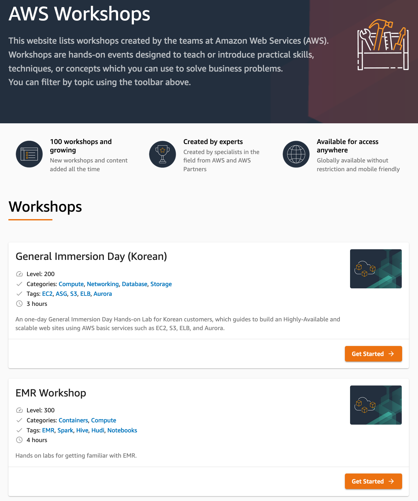

AWS Security 관련 핸즈온 랩 및 데모
AWS 보안 관련 핸즈온 랩 및 데모 사이트 링크들을 모아 놓았습니다. AWS 보안 기능, 서비스, 파트너 제품, 모범 사례 등 다양한 내용들을 링크의 가이드에 따라 직접 실습을 해 보면서 보다 잘 이해하실 수 있습니다.
주의 사항
- 본 목록의 핸즈온 랩 및 데모를 진행하는데는 대부분의 경우 비용이 발생합니다. AWS 요금 또는 파트너 제품의 사용 요금 등 제반 비용에 대해서는 기본적으로는 실습자 부담이기 때문에, 각 핸즈온 랩 가이드에 나와 있는 비용 관련 내용을 숙지하고 실습 여부를 판단해야 합니다.
- 특별한 이유가 없는 한, 실습 후에는 반드시 실습 환경을 삭제하여 더이상 과금되지 않도록 각별히 유념하시기 바랍니다.
AWS Workshop
AWS Workshop은 AWS에서 제공하는 핸즈온 워크샵들을 모아 놓은 웹 싸이트 입니다. 보안 관련 주제도 포함되어 있으며, 계시된 레벨과 소요시간, 관련 서비스 정보를 참조하여 실습을 진행하실 수 있습니다.

- Getting Started with Security on AWS
- Integrating IAM Access Analyzer into a CI/CD Pipeline - Level:300, 2Hr
- Data Perimeter Workshop - Level:400, 2Hr
- AWS Network Firewall Workshop - Level:400, 2Hr
- 제로 트러스트 에피소드 1 - The Phantom Service Perimeter - Level:200, 2Hr
- VPC Flowlogs Analysis using Amazon Elasticsearch Service - Level:200, 2Hr
- AWS Networking Workshop - Level:300, 8Hr
- Scaling your encryption at rest capabilities with AWS KMS - Level:200, 2Hr
- Management_Governance_Immersion_Day - Level:100~200, Modular
- re:Inforce TDR254 - Building an AWS incident response plan using Jupyter notebooks - Level:200, 2Hr
- Building Prowler into a QuickSight powered AWS security dashboard - Level:300, 2Hr
- AWS Encryption Tutorial - Level:200, 5Hr
- AWS Incident Response Playbooks Workshop - Level:400, 2Hr
- Data Discovery and Classification with Amazon Macie - Level:200, 2Hr
- Hands on Network Firewall Workshop - Level:400, 2Hr
- SIEM on Amazon Elasticsearch Service Workshop - Level:200, 2Hr
- AWS CloudTrail Monitoring with Amazon CloudWatch - Level:300, 3Hr
- Implementing DDoS Resiliency - Level:300, 2Hr
- CloudEndure Disaster Recovery Workshop - Level: 200, 6Hr
- Risk and Compliance Immersion Day - Level:100, 2Hr
- Disaster Recovery on AWS - Level: 300, 8Hr
- Active Directory on AWS Immersion Day - Level:200, 4Hr
- DevSecOps on AWS - Level:400, 3Hr
- Introduction to WAF - Level:300, 2Hr
- Firewall Manager service - WAF policy - L:evel:200, 2Hr
- Studying S3 presigned URL feature - Level:400, 1Hr
- Integration, Prioritization, and Response with AWS Security Hub - Level:300, 3Hr
- AWS Identity: Using Amazon Cognito for serverless consumer apps - Level:400, 2Hr
- Scaling threat detection and response on AWS - Level:300, 2Hr
- Finding and addressing Network Misconfigurations on AWS - LevelL300, 2Hr
- Infrastructure Identity on AWS - Level: 300, 2Hr
- DevSecOps - Integrating security into your pipeline - Level:300, 2Hr
- Build a Vulnerability Management Program Using AWS for AWS - Level:300, 2Hr
- Serverless Identity - Level: 300, 2Hr
- Permissions boundaries: how to delegate permissions on AWS - Level:400, 2Hr
- Access Delegation - Level:200, 2Hr
- Data Protection - Level: 300, 2Hr
- Integrating security into your container pipeline - Level:300, 2Hr
- Getting Hands on with Amazon GuardDuty - Level:300, 2Hr
- Ransomware prevention strategies in Amazon S3 - Level:200, 1Hr
- Secure Hybrid Access to S3 using VPC Endpoints - Level: 300, 1Hr
- Amazon VPC Endpoint Workshop - Level:300, 3Hr
- Store, retrieve and manage sensitive credentials in AWS Secrets Manager - Level:300, 2Hr
- ACM Private Certificate Authority (ACM Private CA) Workshop
- Multi-Account Security Governance Workshop - Level:200, 3Hrs
- Workshop: Building remediation workflows to simplify compliance - Level:400, 2Hrs
- Integrating AWS IAM Access Analyzer in a CI/CD Pipeline - Level: 300-400, 3Hrs
- Security Hub Workshop - Level:200, 3 Hrs
- Vulnerability Management with Amazon Inspector - Level:200, 2 Hrs
- AWS Firewall Manager Workshop - Audit and Manage Firewall rules - Level:200, 3:30
- AWS IAM Workshop(한글) - Level:200, 3hr
- Amazon GuardDuty Workshop - Level:200, 3hr
- Visualize Security Hub Findings using Analytics Tools - Level:300,3hr
- Threat modeling the right way for builders - Level:200, 3hr
- AWS Config 워크샵 - Level:200
AWS Well Architected Security Labs
- Level 100: AWS Account and Root User
- Level 100: Basic Identity and Access Management User, Group, Role
- Level 100: CloudFront with S3 Bucket Origin
- Level 100: Enable Security Hub
- Level 200: Automated Deployment of Detective Controls
- Level 200: Automated Deployment of EC2 Web Application
- Level 200: Automated Deployment of IAM Groups and Roles
- Level 200: Automated Deployment of VPC
- Level 200: Automated Deployment of Web Application Firewall
- Level 200: Automated IAM User Cleanup
- Level 200: Basic EC2 with WAF Protection
- Level 200: Certificate Manager Request Public Certificate
- Level 200: CloudFront with WAF Protection
- Level 300: IAM Permission Boundaries Delegating Role Creation
- Level 300: IAM Tag Based Access Control for EC2
- Level 300: Incident Response Playbook with Jupyter - AWS IAM
- Level 300: Incident Response with AWS Console and CLI
- Level 300: Lambda Cross Account IAM Role Assumption
AWS 보안 서비스 관련 핸즈온 랩 및 데모
- AWS Security Workshop
- Identity Round Robin
- SAML 2.0 기반의 Federation에 대한 워크샵 – SAML 2.0을 지원하는 Shibboleth 3.x(with OpenLDAP)이나 MS ADFS기반의 IDP 환경을 AWS 콘솔과 Federtion하는 방법을 정리한 싸이트(AWS Single Sign-On을 이용하지 않는 방법)
- Web Identity Federation Playground - 웹 자격 증명 연동이 어떤 방식으로 작동하는지에 대한 이해를 돕는 시뮬레이션 싸이트
- AWS Data Protection Workshops
- A Busy Engineer’s Guide to the AWS Encryption SDK
- AWS KMS Workshop
- Control Tower Immersion Day
- AWS Secrets Manager Workshop
- modernization-unicorn-store - 컨테이너 환경의 .NET 앱들과 Secret Manager 연계
- Config HOL
- CloudWatch HOL
- CloudTrail HOL
- Service Catalog HOL
- License Manager HOL
- System Manager HOL
- System Manager Compliance HOL
- AWS WAF Workshop
- AWS WAF 공격 및 방어 실습
- Workshop - Protecting Workloads on AWS from the Instance to the Edge
- AWS Workshops - Security
- AWS Workshops - IAM
- AWS Workshops - Networking
- AWS Workshops - Identity
- AWS Workshops - Data Protection
- AWS Workshops - Active Directory
- AWS IAM Hands On Lab(한글)
- AWS 환경에서의 침해사고 대응 워크샵
- Landing Zone Immersion Day
- Cognito authentication
- Using Amazon Cognito for serverless consumer apps
- AWS Nitro Enclaves Workshop
- SIEM on Amazon Elasticsearch Service Workshop
- AWS CLIENT VPN BASIC WORKSHOP (Korean)
AWS 서비스별 보안 기능 관련 핸즈온 랩 및 데모
- DevAx::academy::Security for Developers
- Log Analytic workshop - Elasticsearch Service
- NLB TLS 지원 데모 - 외부 사이트
- Authentication on Application Load Balancer
- re:Invent 2019 - CON317 - Securing your EKS Cluster
- AWS Modernization DevSecOps Workshop
- 보안 소켓 에코 클라이언트 데모
- CloudFormation HOL
- CloudFormation Workshop
- Learn AWS CloudFormation best practices and how to build a Quick Start, the right way!
- Service Catalog HOL
- AWS Service Catalog Tools Intro Workshop
- Operations HOL
- Management Tools Immersion Day
- Edge Services Immersion Day
- CDK Workshop
- Amazon S3 Security Settings and Controls
- Networking Workshop
- AWS Networking Immersion Day
- Appsync Workshop - Security
- How to secure my .NET application on AWS
- VPC Flow logs Analysis using Amazon Elasticsearch Service
- Security and Encryption with Amazon MSK
- RDS MariaDB Advanced Auditing
- RDS MySQL Authenticating using IAM
- RDS Postgre IAM Database Authentication
- Securing RDS SQL Server
- how to set up Kerberos Authentication for Oracle RDS instances
- Use SAML 2.0 for SSO with Redshift
- S3 Security Best Practices
- Serverless Identity Management, Authentication, and Authorization Workshop
- Serverless Security Workshop
- Build an iOS App using a cloud-based backend - Amplify를 통해 iOS 앱의 인증/인가를 구현
- SageMaker Workshop - Building Secure Environments
- SageMaker Workshop - Using Secure Environments
- sagemaker-studio-secure-data-science-workshop
- Securing deployment of third-party ML models
- CIS EKS Benchmark assessment using kube-bench
- Building an AWS incident response runbook using Jupyter notebooks
- S3 Object Lambda redaction Workshop
- AWS IoT Zero Trust workshop
파트너 보안 제품들과 연동하는 핸즈온 랩 및 데모
- DevSecOps with Snyk - ECS 및 Code 시리즈 환경에 대한 보안 테스트 단계를 Synk로 구성한 워크샵
- DevSecOps with Contrast Security - ECS 및 Code 시리즈 환경에 대한 보안 테스트 단계를 Contrast Security로 구성한 워크샵
- 오픈소스를 이용한 AWS Management Console 어카운트ID 접근제어
- Building Prowler into a QuickSight powered AWS Security Dashboard
Remarks
- 이 사이트의 모든 내용은 바뀌거나 수정될 수 있습니다.
- 공식적인 상세한 내용은 http://aws.amazon.com 의 내용을 참조하십시오.
- 제공되는 내용에 이견이 있거나 잘못된 링크를 발견하시면, 관리자(gisunlim@amazon.com)에게 메일을 주시면 대단히 감사하겠습니다.
개인 정보 보호 정책 | 사이트 이용 약관 | © 2020, Amazon Web Services, Inc. 또는 자회사. All rights reserved.